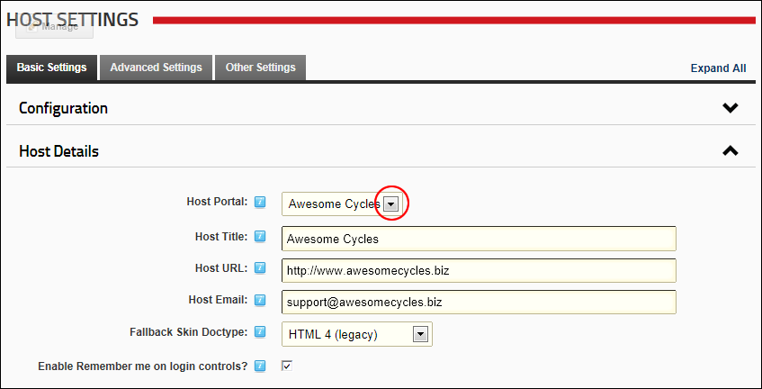

Setting the Host Site
By default, DNN loads the first site created as the default. Changing the site selected here changes which site is loaded by default. The Host site is also the site associated with the Host skin object. See "Setting the Host Details"
- Navigate to Host >
 Host Settings.
Host Settings.
- Select the Basic Settings tab.
- Expand the Host Details section.
- At Host Portal, select the host site from the drop down list.

-
Click the Update button.